Runners
Faction-dressed ships
Player hulls dressed by the people who sail them: pirates, navies, ARI, the Federation and others.
Pirate
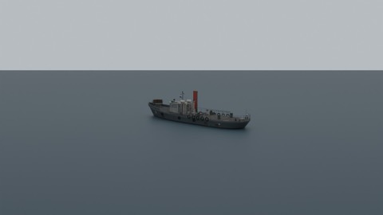
Pirate WispR-01 · on the WispFinal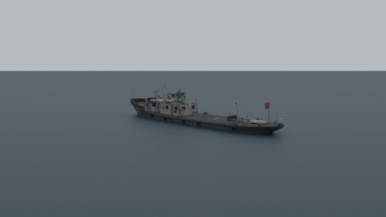
Pirate ShadeR-02 · on the ShadeFinal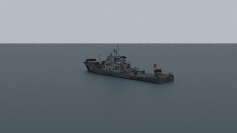
Pirate SkipjackR-03 · on the SkipjackFinal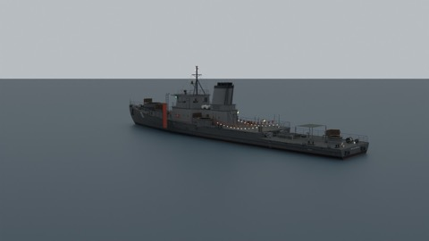
Pirate Blockade RunnerR-04 · on the Blockade RunnerFinal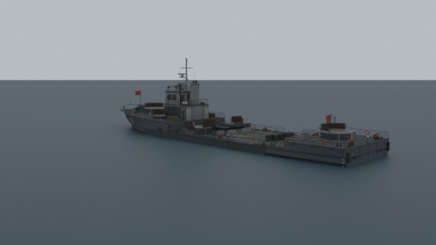
Pirate rocket bargeR-05 · on the Rocket bargeFinal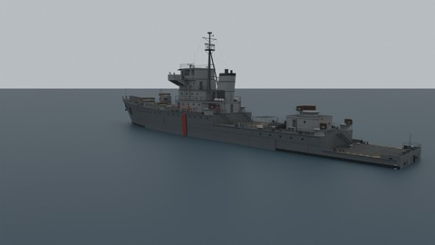
Pirate CorvetteR-06 · on the CorvetteFinal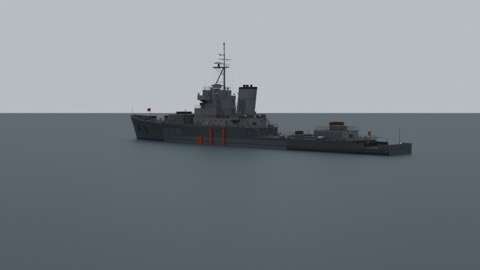
Pirate flagshipR-07 · on the DestroyerFinal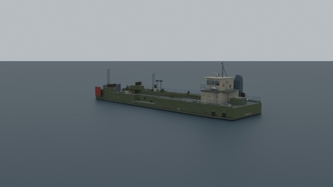
Pirate landing craftR-08 · on the Landing craftFinal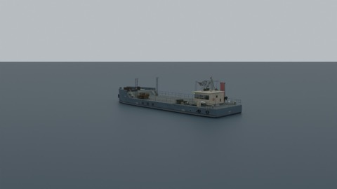
Pirate MuleR-09 · on the MuleFinal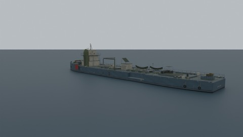
Pirate fuel hulkR-10 · on the Refitted tankerFinal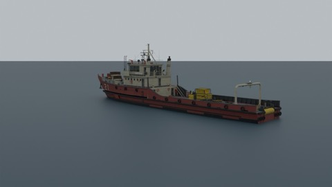
Pirate chain boatR-11 · on the Salvage tenderFinal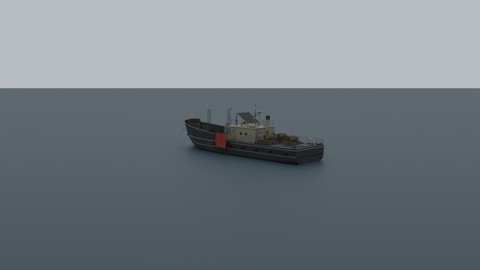
Pirate ScrapperR-12 · on the ScrapperFinal